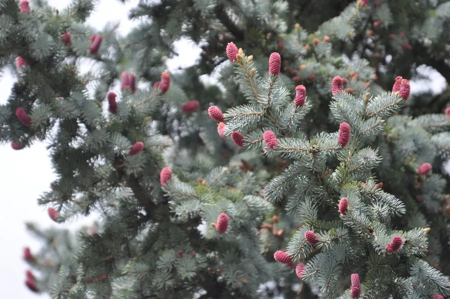

乔木 · 植物界
蓝杉 Picea pungens

原产北美的云杉，针叶蓝灰或银白色，树形端正，是著名的观赏针叶树，在中国北方园林中常见栽培。
- 分类
- 门裸子植物门纲松柏纲目松柏目科松科属云杉属
- 栖息环境
- 海拔 1500–3000 米的北美山地，中国引种于北方园林，喜光耐寒
- 地理分布
- 原产北美洲落基山脉，中国北方及长江流域引种栽培
- 保护级别
- 暂无评估；中国未列入国家重点保护野生植物名录
物种志
蓝杉为常绿针叶乔木，高可达 30 m，树冠塔形，枝条轮生、平展；针叶四棱状，长 2–3 cm，坚硬而尖锐，颜色从灰绿到蓝灰、银白不等，越靠近顶端色彩越鲜艳，是其最重要的观赏特征。雌雄同株，球果圆柱状，长 6–10 cm，成熟时褐色，种子具翅。
蓝杉原产北美洲落基山脉，中国北方及长江流域引种栽培，喜光、耐寒、耐旱，适宜深厚肥沃、排水良好的土壤，生长较慢。因针叶蓝灰色、树形端正，是世界著名的观赏针叶树，常用于庭院、公园与草坪孤植或列植；园艺品种较多，有矮生、垂枝等类型。木材轻软，可供建筑与造纸用；蓝杉也是圣诞树的重要树种之一。
形态与习性
- 株高可达 30 m，树冠塔形
- 针叶四棱状，蓝灰至银白色，长 2–3 cm
- 花期4–5 月，雌雄同株
- 球果成熟9–10 月，圆柱状
- 光照喜光，不耐长期荫蔽
- 主要用途园林观赏、圣诞树、建筑用材
趣味知识
- 蓝杉的针叶呈蓝灰至银白色，是针叶树中少见的冷色调观赏树种。
- 蓝杉针叶坚硬尖锐，栽培修剪时需要戴手套。
- 蓝杉原产北美落基山，是欧美圣诞树的重要树种之一。